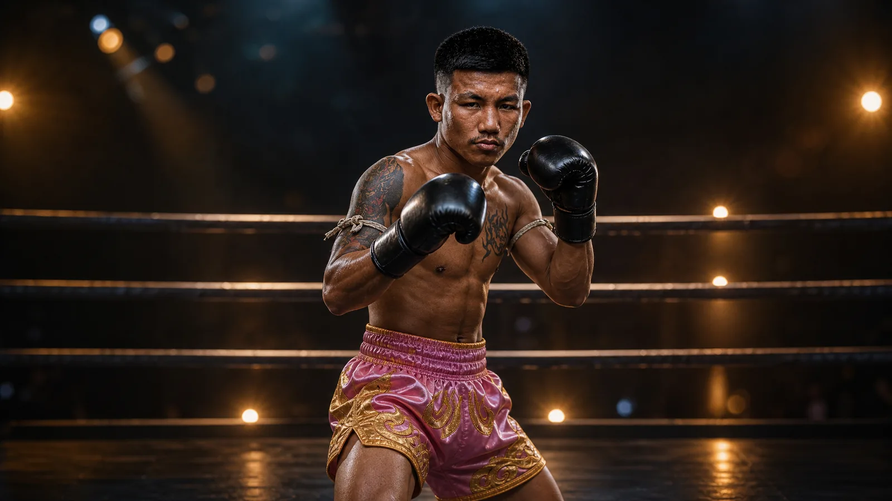
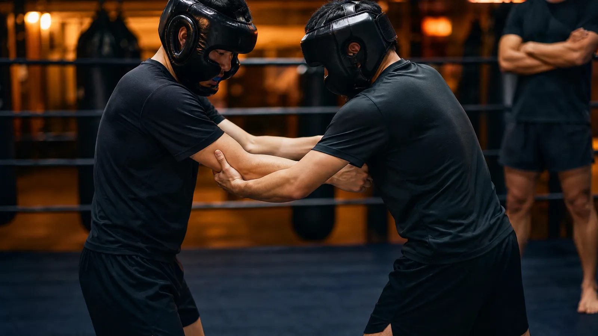

Rodtang Jitmuangnon kämpft seit 2018 bei ONE Championship. Gut fünf Jahre lang hielt er dort den Weltmeistertitel im Fliegengewicht des Muay Thai, und seine Highlight-Clips gehen laut ONE immer wieder viral. Die Trainingsplattform Evolve University nennt ihn „vielleicht den berühmtesten Muay-Thai-Kämpfer in der Geschichte des Sports“. Auf Deutsch gibt es trotzdem wenig Verlässliches über ihn, einen Artikel in der deutschsprachigen Wikipedia sucht man bisher vergeblich.
Hier findest du die belegten Fakten: Steckbrief und Bilanz mit Stand, die Stationen von den Tempelfesten in Südthailand bis zum Titel bei ONE und die Kämpfe, über die bis heute gesprochen wird. Danach schauen wir uns seinen Stil mit dem Blick aus der Trainingshalle an. Welche Prinzipien kannst du als Hobby-Kämpfer übernehmen, und was solltest du dir besser nicht abschauen? Zum Schluss geht es um seinen nächsten Kampf, der schon in wenigen Tagen ansteht.
Faktenstand: Alle Zahlen, Ranglisten und Kampfansetzungen in diesem Artikel haben wir am 3. Oktober 2026 bei ONE Championship und den unten genannten Quellen geprüft. Kampfkarten können sich kurzfristig ändern. Maßgeblich ist die Eventseite von ONE.
Rodtangs nächster Kampf auf einen Blick
Wer ist Rodtang Jitmuangnon?
Rodtang ist ein thailändischer Muay-Thai-Kämpfer und Kickboxer, Jahrgang 1997, der im Fliegengewicht von ONE Championship antritt. Bürgerlich heißt er laut Wikipedia Tinnakorn Srisawat. Jitmuangnon ist der Name des Gyms, für das er seit seiner Jugend kämpft. Den Weltmeistertitel hat er seit November 2024 nicht mehr. Im offiziellen Ranking von ONE steht er im Fliegengewicht Muay Thai aber weiterhin auf Platz 2, hinter Weltmeister Asadula Imangazaliev und dem Ranglistenersten Aslamjon Ortikov.
Rodtang Jitmuangnon: Größe, Gewicht, Bilanz
| Merkmal | Angabe |
|---|---|
| Bürgerlicher Name | Tinnakorn Srisawat |
| Beiname | „The Iron Man“ |
| Geboren | 23. Juli 1997, heute 29 Jahre |
| Herkunft | Provinz Phatthalung, Südthailand |
| Gym | Jitmuangnon Gym, Nonthaburi (Großraum Bangkok) |
| Größe | 168 cm |
| Gewichtsklasse | Fliegengewicht bei ONE, Limit 135 lb (61,2 kg) |
| Stil | Muay Mat (Puncher), Normalauslage |
| Bilanz bei ONE | 17 Siege, 3 Niederlagen |
| Gesamtbilanz | 274 Siege, 44 Niederlagen, 10 Unentschieden |
| Größter Titel | ONE-Weltmeister Fliegengewicht Muay Thai, August 2019 bis November 2024, fünf Titelverteidigungen |
| Ranking | Nr. 2, ONE Fliegengewicht Muay Thai |
Quellen: ONE-Athletenprofil (Größe, Limit, Alter, Gym, Bilanz bei ONE), ONE-Ranking, ONE, 25.09.2026 (274 Siege), ONE, 29.04.2026 (Niederlage Nr. 44 gegen Takeru), Wikipedia (bürgerlicher Name, Geburtsdatum, Auslage, 10 Unentschieden, die auch ONE in älteren Berichten führt). Stand: 3. Oktober 2026.
Der Kampfname ist sprechend. „Rodtang“ bedeutet auf Thai Panzer, schreibt ONE in einem Beitrag über thailändische Kampfnamen. Solche Namen bekämen oft kompakte, kräftige Kämpfer, die gern boxen und Low Kicks schlagen. Den Beinamen „The Iron Man“ führt ONE in jedem Profil. Woher er genau stammt, ist offiziell nicht dokumentiert. Er passt aber zu dem, was ONE an Rodtang immer wieder hervorhebt: seine Nehmerqualitäten und seinen Drang nach vorn.
Wenn du ONE Championship bisher nur dem Namen nach kennst: Wie die Organisation aufgebaut ist und welche Regeln dort gelten, liest du in ONE Championship erklärt.
Wie wurde Rodtang in Thailand zum Star?
Durch sehr viele Kämpfe, und das von klein auf. Laut ONE begann Rodtang mit sieben Jahren zu trainieren. Mit acht stand er zum ersten Mal im Ring, bei einem Tempelfest in einem Dorf in Südthailand, nach gerade einmal zwei Wochen Training. Er gewann und hängte acht weitere Siege an. Seinen ersten Profikampf bestritt er nach Angaben seines ONE-Profils mit zehn. Das Geld aus den Kämpfen half ihm und seiner Familie, und genau das gab ihm damals den nötigen Antrieb.
Nach rund sechs Jahren mit Kämpfen im Süden zog er ins fast tausend Kilometer entfernte Bangkok und schloss sich dem Jitmuangnon Gym an. Dort wurde laut ONE sechs Stunden am Tag trainiert. Leicht war der Anfang nicht. Rodtang erzählte später von einer Phase mit mehreren Niederlagen in Folge, ohne Geld und ohne Motivation. Zurück ins Training holte ihn der damalige Gym-Besitzer Huan Jitmuangnon.
Danach kam der Durchbruch. Rodtang wurde zweimal Champion im Omnoi-Stadion und hatte laut ONE mit 21 Jahren schon mehr als 250 Siege gesammelt. Laut Wikipedia gewann er 2016 außerdem den Titel von MAX Muay Thai bis 125 Pfund, und zwei seiner Kämpfe im Rajadamnern-Stadion wurden 2018 und 2019 dort zum Kampf des Jahres gewählt. Als er im September 2018 in Jakarta gegen Sergio Wielzen sein ONE-Debüt gab und einstimmig nach Punkten gewann, stand seine Bilanz laut ONE bei 252 Siegen, 40 Niederlagen und 10 Unentschieden.
Für europäische Augen wirken solche Zahlen fast unwirklich. Zum Vergleich: Takeru Segawa, K-1-Champion in drei Gewichtsklassen, beendete seine Karriere 2026 mit 46 Siegen und 5 Niederlagen. Der Unterschied liegt im Einstiegsalter und im Takt. Rodtang begann wie viele thailändische Kämpfer schon als Kind und hatte laut ONE mit 21 Jahren mehr als 300 Kämpfe hinter sich. Wie sich Muay Thai vom Kickboxen unterscheidet, zeigt unser Vergleich Muay Thai vs. Kickboxen.
Wie wurde Rodtang ONE-Weltmeister?
Mit einem knappen Sieg über Jonathan Haggerty. Am 2. August 2019 forderte Rodtang den Briten bei ONE: Dawn of Heroes in Manila um den Titel im Fliegengewicht Muay Thai heraus. Haggerty, damals Weltmeister, hielt ihn anfangs mit Jab und Teep auf Distanz. Ab der dritten Runde drehte Rodtang auf, ging mit Haken zum Kopf und zum Körper nach vorn und schickte Haggerty in der vierten Runde mit einer Links-rechts-Kombination zu Boden. Die Punktrichter entschieden einstimmig für ihn, auch wenn ONE das Duell selbst als „extrem knapp“ beschrieb.
Die Revanche am 10. Januar 2020 in Bangkok war eindeutiger. Schon in der ersten Runde traf Rodtang mit einem linken Haken zur Leber, und Haggerty ging zu Boden. Danach arbeitete Rodtang konsequent zum Körper. In der dritten Runde musste Haggerty dreimal zu Boden, nach 2:39 Minuten war der Kampf vorbei.
Insgesamt verteidigte Rodtang den Titel fünfmal: gegen Walter Goncalves (2019), Haggerty (2020), Petchdam (2020), Joseph Lasiri (2022) und Edgar Tabares (2023). Gegen Tabares in Colorado endete der Kampf in der zweiten Runde. Rodtang wich einem gedrehten Ellbogen aus und traf selbst mit dem linken Ellbogen, Tabares kam nicht mehr hoch. ONE zahlte ihm dafür einen Bonus von 100.000 US-Dollar.
Was Rodtang für das Publikum ausmacht, zeigt allerdings ein Kampf ohne Titel. Im April 2021 traf er bei ONE on TNT I auf den Australier Danial Williams. Williams setzte ihn in der ersten Runde mit schnellen Rechten unter Druck. Rodtang antwortete ab der zweiten Runde mit einem Niederschlag, harten Ellbogen und viel Gestik in Richtung Gegner. Er gewann einstimmig, und ONE wählte das Duell zum besten Kampf des Jahres 2021 in seiner Striking-Serie ONE Super Series.
Welche Kämpfe von Rodtang muss man kennen?
Die Grafik zeigt seine Zeit bei ONE in elf Stationen, die Tabelle darunter die wichtigsten Kämpfe mit Ergebnis. Drei Duelle schauen wir uns danach genauer an: den Ausflug ins MMA gegen Demetrious Johnson, die Niederlage gegen Superlek und die beiden Kämpfe gegen Takeru.
Rodtangs Karriere bei ONE, 2018 bis 2026
Abstände nicht maßstäblich. Quellen: Kampfberichte von ONE Championship (siehe Quellenliste), Ansetzung laut ONE-Eventseite. Stand: 3. Oktober 2026.
Rodtangs wichtigste Kämpfe bei ONE
| Datum | Gegner | Event, Ort | Regeln | Ergebnis |
|---|---|---|---|---|
| 02.08.2019 | Jonathan Haggerty | ONE: Dawn of Heroes, Manila | Muay Thai, Titelkampf | Sieg, einstimmig nach Punkten; neuer Weltmeister |
| 10.01.2020 | Jonathan Haggerty | ONE: A New Tomorrow, Bangkok | Muay Thai, Titelkampf | Sieg, TKO in Runde 3 (2:39) |
| 07.04.2021 | Danial Williams | ONE on TNT I | Muay Thai | Sieg, einstimmig; Kampf des Jahres 2021 (ONE Super Series) |
| 26.03.2022 | Demetrious Johnson | ONE X, Singapur | Sonderregeln Muay Thai/MMA | Niederlage, Würgegriff in Runde 2 (2:13) |
| 05.05.2023 | Edgar Tabares | ONE Fight Night 10, Broomfield (USA) | Muay Thai, Titelkampf | Sieg, K. o. per Ellbogen in Runde 2 (1:34) |
| 22.09.2023 | Superlek Kiatmoo9 | ONE Friday Fights 34, Lumpinee-Stadion | Muay Thai, 140 lb | Niederlage, einstimmig nach Punkten |
| 08.11.2024 | Jacob Smith | ONE 169, Lumpinee-Stadion | Muay Thai, 5 Runden | Sieg, einstimmig; Titel vorher auf der Waage aberkannt |
| 23.03.2025 | Takeru Segawa | ONE 172, Saitama Super Arena | Kickboxen | Sieg, K. o. in Runde 1 (1:20) |
| 29.04.2026 | Takeru Segawa | ONE Samurai 1, Ariake Arena, Tokio | Kickboxen, Interimstitel | Niederlage, TKO in Runde 5 (2:22) |
| 13.11.2026 | Nong-O Hama | The Inner Circle 38, Lumpinee-Stadion | Muay Thai, GP-Viertelfinale | angesetzt |
Daten und Ergebnisse aus den Kampfberichten von ONE Championship (Links in der Quellenliste). Datumsangaben nach Ortszeit des Veranstalters; ONE 169 lief in der US-Primetime am 8. November. Stand: 3. Oktober 2026.
Rodtang vs. Demetrious Johnson (2022)
Das war der ungewöhnlichste Kampf seiner Karriere. Am 26. März 2022 trat Rodtang bei ONE X in Singapur gegen Demetrious Johnson an, den ONE als zwölfmaligen Weltmeister im Fliegengewicht des MMA führt. Gekämpft wurde nach Sonderregeln: Die Runden wechselten zwischen Muay Thai und MMA, die erste lief nach Muay-Thai-Regeln. Dort setzte Rodtang Johnson mit Low Kicks und Schlägen unter Druck, Johnson hielt stand und schlug zurück. In der zweiten Runde, der ersten nach MMA-Regeln, wechselte Johnson nach einem Low Kick die Ebene, kam bei einem Takedown-Versuch in Rodtangs Rücken, zog ihn zu Boden und gewann nach 2:13 Minuten per Würgegriff von hinten.
Für einen reinen Striker waren die MMA-Runden fremdes Terrain. Wenige Wochen später sagte Rodtang zu ONE, er sei offen für weitere Kämpfe dieser Art, wolle aber sicher sein, dass sie für beide Seiten fair seien.
Rodtang vs. Superlek (2023)
Am 22. September 2023 trafen im Lumpinee-Stadion in Bangkok zwei der großen Striker ihrer Zeit aufeinander. Rodtangs Titel stand nicht auf dem Spiel, weil Superlek das Gewicht verfehlt hatte, gekämpft wurde bei 140 Pfund. Superlek, damals ONE-Weltmeister im Kickboxen, bremste Rodtang mit harten rechten Kicks auf den Oberschenkel. Rodtang öffnete ihm mit einem Aufwärtsellbogen eine Platzwunde, wurde in der zweiten Runde aber nach einem Ellbogen angezählt. Superlek gewann einstimmig nach Punkten. Es war Rodtangs erste Niederlage unter Schlagregeln bei ONE.
Das Fachportal Beyond Kickboxing hat den Kampf danach Runde für Runde analysiert. Der Autor kommt zu dem Schluss, dass Superlek Rodtang mit Finten, Kontrolle von Händen und Handgelenken und schnellen Wechseln zwischen Distanz, Knie und Clinch immer wieder aus dem Rhythmus gebracht habe. Rodtang fand einzelne Antworten, etwa getimte Haken, Ellbogen und Feger, aber nicht durchgehend. Für dein eigenes Training steckt darin eine Lektion, auf die wir weiter unten zurückkommen: Druck allein reicht nicht, wenn der Gegner einen Plan dagegen hat.
Rodtang vs. Takeru (2025 und 2026)
Nach keinem Kampf von Rodtang wird in Deutschland so oft gesucht wie nach diesem: Auf „rodtang vs takeru“ entfallen laut Google-Ads-Daten rund 320 Suchen im Monat. Der erste Kampf am 23. März 2025 in der Saitama Super Arena lief nach Kickbox-Regeln und dauerte 80 Sekunden. Nach einem kurzen Austausch von Low Kicks ging Rodtang nach vorn, traf mit Links-rechts, wiederholte die Kombination nahe der Ringecke und beendete den Kampf mit einem linken Haken. Takeru, K-1-Champion in drei Gewichtsklassen, kam nicht mehr rechtzeitig hoch.
Unter Kickbox-Regeln trägt Rodtang bei ONE übrigens Boxhandschuhe mit 8 Unzen statt der 4-Unzen-Handschuhe aus dem Muay Thai, und Ellbogen sind verboten. Ein Teil seines Werkzeugkastens fällt damit weg.
Die Revanche am 29. April 2026 bei ONE Samurai 1 in der Ariake Arena in Tokio war Takerus Abschiedskampf, es ging um den Interimstitel im Fliegengewicht Kickboxen. Diesmal blockte Takeru den linken Haken und konterte mit Kicks. In der zweiten Runde ging Rodtang nach linken Haken zweimal zu Boden und stand zweimal wieder auf. In der dritten und vierten Runde kam er mit Teeps und Schlagserien zurück, in der fünften stoppte der Ringrichter den Kampf nach 2:22 Minuten. Takeru verabschiedete sich mit 46 Siegen und 5 Niederlagen als Interimsweltmeister.
Warum hat Rodtang seinen Titel verloren?
Auf der Waage, nicht im Ring. Vor seiner sechsten Titelverteidigung gegen Jacob Smith bei ONE 169 im November 2024 bestand Rodtang weder den Hydrationstest noch das Gewicht. ONE erkannte ihm den Titel ab, nur Smith hätte ihn noch gewinnen können. Rodtang gewann trotzdem einstimmig nach fünf Runden, und der Gürtel blieb vakant. Inzwischen trägt ihn Asadula Imangazaliev, der im März 2026 Nong-O Hama in der zweiten Runde besiegte.
Bei ONE müssen alle Kämpfer vor dem Wiegen nachweisen, dass sie ausreichend hydriert sind. Rodtang hat offen über diese Hürde gesprochen. Im April 2026 sagte er ONE (übersetzt): „ONE ist beim Wiegen und beim Wasseranteil sehr streng. Das ist für alle Kämpfer eine Herausforderung, auch für einen so erfahrenen wie mich.“ Er kämpfe seit sieben, acht Jahren auf diese Weise. Eine Klasse höher sehe er für sich zu viele Nachteile, deshalb wolle er so lange wie möglich im Fliegengewicht bleiben. Zu den Vorwürfen nach dem Titelverlust sagte er: „Fehler passieren in allen Berufen und Sportarten. Wenn der Fehler bei mir liegt, kann ich ihn beheben.“
Vor dem ersten Takeru-Kampf hatte er begonnen, mit einem Ernährungsberater zu arbeiten, der seine Mahlzeiten plante und portionierte. Frittiertes und Süßes strich er, das Gewicht ging nach eigenen Worten Woche für Woche langsam herunter. Wie das Hydrationssystem von ONE genau funktioniert und was die Forschung zum schnellen Gewichtmachen sagt, steht in unserem Überblick zu den Gewichtsklassen im Kampfsport. Im Juli 2026 machte Rodtang an seinem Geburtstag einen neuen Vertrag bei ONE offiziell.
Wie kämpft Rodtang?
Rodtang ist ein Muay Mat, also ein Thaiboxer, der vor allem über die Hände kommt. ONE beschreibt ihn als Puncher, der selten hohe Kicks wirft und Low Kicks und Schlagkombinationen gegenseitig vorbereitet. Im klassischen Stadion-Muay-Thai ist das kein einfacher Weg: Schläge zählen dort laut der Analyse von Evolve University nur, wenn sie sichtbar Wirkung zeigen, und ein einziger Körperkick kann mehr Punkte bringen als mehrere harte Schläge. Bei ONE stehen in den offiziellen Wertungskriterien Niederschläge an erster und Schaden an zweiter Stelle, erst danach folgen saubere Treffer und Aggressivität. Evolve University sieht darin einen Grund, warum Rodtang mit diesem Regelwerk so gut zurechtkommt.

Druck mit Pausen statt Dauerfeuer
Auf Highlight-Clips wirkt Rodtang wie jemand, der ohne Plan nach vorn läuft. Die Technik-Analyse von Evolve University beschreibt etwas anderes. Er verfolgt seinen Gegner mit enger Deckung, schlägt dann zwei, drei Techniken auf verschiedene Ebenen und hält kurz inne. Hat er getroffen oder den Gegner aus dem Gleichgewicht gebracht, legt er nach. Wenn nicht, geht er aus der Distanz oder bindet den Gegner im Clinch, damit nichts zurückkommt. So spart er Kraft für fünf Runden und nimmt weniger unnötige Treffer, als die Clips vermuten lassen.
Der linke Haken, oft zum Körper
Seine wichtigste Waffe ist der linke Haken. ONE beschreibt ihn als kurz und kompakt, ohne Ausholen und ohne Ankündigung. Gegen Takeru reichte er 2025 für den K. o. am Kopf, in beiden Kämpfen gegen Haggerty setzte er laut ONE wirkungsvolle Haken zur Leber. Das Prinzip dahinter: Wer seinen Kopf vor den Haken schützt, macht die Rippen frei. Rodtang wechselt deshalb ständig zwischen Kopf und Körper und sammelt mit Körpertreffern über die Runden Wirkung.
Low Kick und Teep als Bremse
Die Beine nutzt er vor allem, um den Kampf zu steuern. Nach einem Schlagabtausch tritt er laut Evolve University gern einen Schritt zurück und lädt den Gegner ein nachzurücken. Kommt der, trifft ihn ein harter Low Kick, und beim nächsten Mal überlegt er es sich zweimal. Nach einer Schlagserie setzt Rodtang häufig einen Teep mit dem vorderen Bein zur Hüfte, um den Gegner aus dem Gleichgewicht zu bringen oder auf Distanz zu schieben. Gegnerische Teeps fängt er gern ab, ONE nennt das eines seiner Markenzeichen. Wie wirksam Low Kicks bei ihm sein können, zeigte 2019 sein Kampf gegen Sok Thy, den er mit Tritten gegen das vordere Bein in der zweiten Runde stoppte.
Clinch und Ellbogen
Den Clinch sucht Rodtang laut ONE selten. Kommt ein Gegner trotzdem nah heran, bindet er dessen Arme, wartet ab und fegt ihn, sobald der aus dem Gleichgewicht gerät, so beschreibt es Evolve University. Danach geht der Kampf in seiner Lieblingsdistanz weiter. ONE weist auch auf eine Schwäche hin: Wenn Rodtang in kurzer Distanz zum Körper schlägt, öffnet er seinen Kopf für Ellbogen. Seine eigenen Ellbogen sind dagegen gefährlich: Gegen Tabares beendete einer den Kampf, gegen Superlek und Jacob Smith öffneten sie Cuts.

Das Kinn und die Show
Wenn über Rodtang gesprochen wird, fällt laut ONE fast immer zuerst das Wort „Granitkinn“. Die Organisation selbst schreibt von beinahe übernatürlicher Widerstandskraft. Dazu kommt die Show: Rodtang winkt Gegner heran, provoziert sie und spielt mit dem Publikum, so beschreibt ONE etwa den Kampf gegen Jacob Smith 2024. Laut Evolve University trügt der Eindruck aber, er tausche einfach Treffer gegen Treffer. Diesen Tausch gehe er seltener ein, als man denkt. Ein Blick auf seine Bilanz bei ONE passt dazu: Von 17 Siegen gingen 13 über die volle Distanz.
So hat Rodtang seine 17 Siege bei ONE geholt
Quelle: ONE-Athletenprofil Rodtang, Aufschlüsselung „Breakdown“, Stand: 3. Oktober 2026. ONE zählt 20 Kämpfe (17 Siege, 3 Niederlagen), einschließlich des Sonderregel-Kampfs gegen Demetrious Johnson.
Was kannst du als Hobby-Kämpfer von Rodtang lernen?
Vor allem, wie kontrollierter Druck funktioniert. Seine Härte und seine Erfahrung aus über 300 Kämpfen lassen sich nicht kopieren, die Prinzipien hinter seinem Stil schon. Die folgenden sechs Punkte kannst du im normalen Training üben, am Sandsack, an den Pratzen oder mit einem Partner. Leichte Kontrolle geht immer vor Härte.
- Druck kommt aus den Füßen. Rodtang rennt nicht, er schiebt sich mit kleinen Schritten heran, Deckung oben, Kinn unten. Übe das im Schattenboxen: drei Runden à zwei Minuten nur vorwärts, mit kurzen Schritten, und nach jeder Kombination zwei Schritte ohne Schlag.
- Kurze Serien auf zwei Ebenen, dann Pause. Zwei oder drei Techniken, zum Beispiel Jab, linker Haken zum Körper, linker Haken zum Kopf. Danach raus oder neu ansetzen, statt weiterzudreschen. An den Pratzen lernst du so, deine Kraft über die Runde zu verteilen.
- Den Körper nicht vergessen. Für den linken Haken zur Leber gehst du mit den Knien runter statt mit dem Oberkörper nach vorn, der Ellbogen bleibt nah am Körper, die Kraft kommt aus der Drehung der Hüfte. Am Sandsack oder am Bauchschutz deines Partners lässt sich das kontrolliert üben.
- Low Kick als Bremse. Wenn dein Partner nachrückt, triffst du sein vorderes Bein. Im Partnertraining heißt das: Schienbeinschoner an, langsam und mit Ansage, und erst die Technik, dann das Tempo.
- Teep zur Hüfte nach der Serie. Damit holst du dir Distanz zurück und nimmst dem Gegner den Konter. Ziel ist die Hüfte, nicht das Knie.
- Clinch zum Lösen nutzen. Arme binden, kurz abwarten, Gleichgewicht nehmen, raus. Das übst du mit einem Partner, der mitarbeitet, und ohne Knie und Ellbogen, solange ihr beide Anfänger seid.
Dazu kommt die Lehre aus dem Superlek-Kampf. Wer gern nach vorn arbeitet, sollte Finten und Handkontrolle früh kennenlernen, weil genau damit ein erfahrener Gegner den Druck auflöst. Und wer selbst gegen einen Druckkämpfer steht, findet in Superleks Werkzeug eine gute Liste: Finten, Kicks, Kopfbewegung und Kontrolle der Hände.
Was solltest du dir von Rodtang nicht abschauen?
Das Treffer-Nehmen. Was bei einem Profi mit Hunderten Kämpfen nach Stärke aussieht, ist für dein Training kein Ziel. Die Professional Fighters Brain Health Study hat 224 Profikämpfer untersucht, 131 aus dem MMA und 93 Boxer (Bernick und Kollegen, 2015). Je mehr Profikämpfe und Kampfjahre jemand hinter sich hatte, desto kleiner waren im MRT bestimmte Hirnregionen, vor allem Thalamus und Nucleus caudatus, und desto langsamer war die Verarbeitungsgeschwindigkeit in Tests.
Auch Sparring zählt. Eine Fallstudie aus Australien (Del Vecchio und Kollegen, 2026) hat einen Muay-Thai-Kämpfer der Weltspitze in den zwei Wochen vor einem Kampf mit einem Sensor-Mundschutz begleitet. In sieben Sparringseinheiten zeichnete das Gerät 590 Einschläge auf. Die meisten waren mild, einzelne erreichten aber hohe Drehbeschleunigungen. Die Autoren sehen in solchen Messungen eine Möglichkeit, die Kopfbelastung im Sparring gezielt zu steuern, raten aber zur Vorsicht bei einzelnen Spitzenwerten. Für dich heißt das: leichtes, technisches Sparring mit Mundschutz und Partnern, denen du vertraust. Was du dafür an Schutzausrüstung brauchst, steht in Kickboxen Ausrüstung für Anfänger.
Die Show mit gesenkten Händen kannst du ebenfalls getrost ihm überlassen. Bei Rodtang ist sie Teil eines Auftritts, der auf Jahren Erfahrung aufbaut, im Hobbytraining ist sie vor allem eine Lücke in der Deckung. Gleiches gilt für das Gewicht: Wenn selbst ein Profi mit Ernährungsberater am Hydrationstest scheitern kann, ist schnelles Abkochen vor einem Amateurkampf keine gute Idee.
Und wenn es dich doch einmal erwischt: Sag es. In einer Befragung von 193 erwachsenen Muay-Thai-Wettkämpfern (Lystad und Strotmeyer, 2018) gaben 69,4 % an, Symptome einer Gehirnerschütterung wahrscheinlich zu melden. Fast ein Drittel sagte das also nicht. Kopfschmerzen, Schwindel, Übelkeit oder Benommenheit nach einem Treffer sind ein Grund, das Training zu beenden und dich ärztlich untersuchen zu lassen.
Wichtig: Dieser Abschnitt fasst Studien zusammen und ersetzt keine medizinische Beratung. Wenn du nach Kopftreffern Beschwerden hast, kläre das mit einer Ärztin oder einem Arzt, bevor du wieder ins Sparring gehst.
Wann ist Rodtangs nächster Kampf?
Am Freitag, 13. November 2026. Im Lumpinee-Stadion in Bangkok trifft Rodtang bei The Inner Circle 38 auf Nong-O Hama. ONE führt den Abend als „ONE Friday Fights 178 & The Inner Circle 38“: Zuerst läuft The Inner Circle, danach ONE Friday Fights. Der Kampf ist eines der Viertelfinals im ONE Flyweight Muay Thai World Grand Prix 2026, einem Turnier mit acht Kämpfern. Auf den Turniersieger warten laut ONE ein silberner Grand-Prix-Gürtel und der direkte Weg zum Titelkampf gegen Weltmeister Imangazaliev. Das zweite bereits feststehende Viertelfinale bestreiten Shimon Yoshinari und Ramadan Ondash am selben Abend.
Nong-O ist 39 Jahre alt und war lange ONE-Weltmeister im Bantamgewicht, mit sieben Titelverteidigungen in Folge. Laut ONE stehen 268 Siege in seiner Bilanz. Im März 2026 verlor er den Kampf um den vakanten Fliegengewichtstitel gegen Imangazaliev und gewann danach gegen Kongthoranee Sor Sommai. Rodtang und Nong-O sollten sich schon im November 2025 bei ONE 173 in Tokio gegenüberstehen, der Kampf kam damals aber nicht zustande.
Eine Prognose geben wir nicht ab, wir sind Trainer und keine Tippgeber. Übertragen wird The Inner Circle 38 laut ONE-Eventseite exklusiv auf live.onefc.com, für Mitglieder von The Inner Circle. Beim Abruf am 3. Oktober 2026 kostete die Mitgliedschaft dort 8,99 € im Monat oder 89 € im Jahr, jeweils zuzüglich Steuern. Für Deutschland hat ONE diesen Weg zuletzt bei The Inner Circle 33 am 2. Oktober bestätigt, Österreich und die Schweiz führt ONE dort nicht eigens auf. The Inner Circle 38 beginnt um 18:30 Uhr Ortszeit, also um 12:30 Uhr deutscher Zeit. Am 13. November gilt bei uns schon die Winterzeit, der Abstand zu Bangkok beträgt deshalb sechs Stunden.
Was wir in der Halle beobachten
Unsere Trainer stehen seit 2006 in der Halle, heute trainieren jeden Monat über 1.500 Menschen offline mit ihnen. Bei Kämpfern, die sich an Druckkämpfern wie Rodtang orientieren, sehen wir dabei immer wieder dieselben Muster. Was folgt, sind Beobachtungen aus der Trainingspraxis, keine Studienergebnisse:
- Wer viele Highlight-Clips von Druckkämpfern schaut, nimmt im Sparring gern die Hände runter. Im Video sieht das lässig aus, in der Halle endet es meist mit einem Treffer, den niemand gebraucht hätte.
- Druck scheitert bei Einsteigern fast immer an den Füßen. Wer mit großen Schritten nach vorn springt, steht nach der Kombination schief und kann weder nachlegen noch raus.
- Den Körperhaken trainieren Hobby-Kämpfer zu selten. Am Sandsack fliegt fast alles auf Kopfhöhe. Wer zwei, drei Runden pro Woche bewusst zum Körper schlägt, merkt im Partnertraining schnell den Unterschied.
- Wer nur nach vorn kann, wird berechenbar. Die Leute, die am meisten von Rodtangs Stil lernen, üben auch das Gegenteil: zurücktreten, den Partner kommen lassen, Low Kick.
Das Wichtigste in vier Sätzen
Rodtang Jitmuangnon, Jahrgang 1997, war von 2019 bis 2024 ONE-Weltmeister im Fliegengewicht Muay Thai, verteidigte den Titel fünfmal und verlor ihn im November 2024 auf der Waage, nicht im Ring. Er steht bei 274 Siegen und 44 Niederlagen, bei ONE bei 17 Siegen und 3 Niederlagen; geschlagen haben ihn dort nur Demetrious Johnson, Superlek und Takeru. Sein Stil lebt von kontrolliertem Druck, dem linken Haken zu Kopf und Körper und Low Kicks als Bremse, das Treffer-Nehmen und die Show solltest du dir dagegen nicht abschauen. Sein nächster Kampf ist am 13. November 2026 bei The Inner Circle 38 im Lumpinee-Stadion gegen Nong-O Hama, ein Viertelfinale im Grand Prix, ab 12:30 Uhr deutscher Zeit auf live.onefc.com.